Data Connection and Virtualization¶
This section will cover aspects of collecting data in Cloud Pak for Data. Specifically we will be connecting to different data sources and creating views against those data sources to create a single unified set of data assets that can be used in other modules of this workshop.
The user persona involved is a Data Steward. The data can exist on any database, on premise or on the cloud. Using IBM Data Virtualization we can access the data without moving it, using specifically crafted SQL queries to view the data, join the data and perform other operations. The sequence we will follow will be:
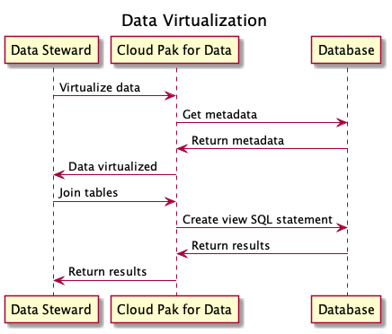
Note: To complete this section, an Admin or Data Engineer role needs to be assigned to your user account. The workshop instructor will assign this role as appropriate.
The section is broken up into the following steps:
Virtualizing Data¶
In this section, we will gather data from several tables across data sources. We will use data virtualization to access these tables and then create joined views against those virtualized tables.
Create Virtualized Tables¶
- To launch the data virtualization tool, go the (☰) navigation menu and click
Data->Data virtualization.
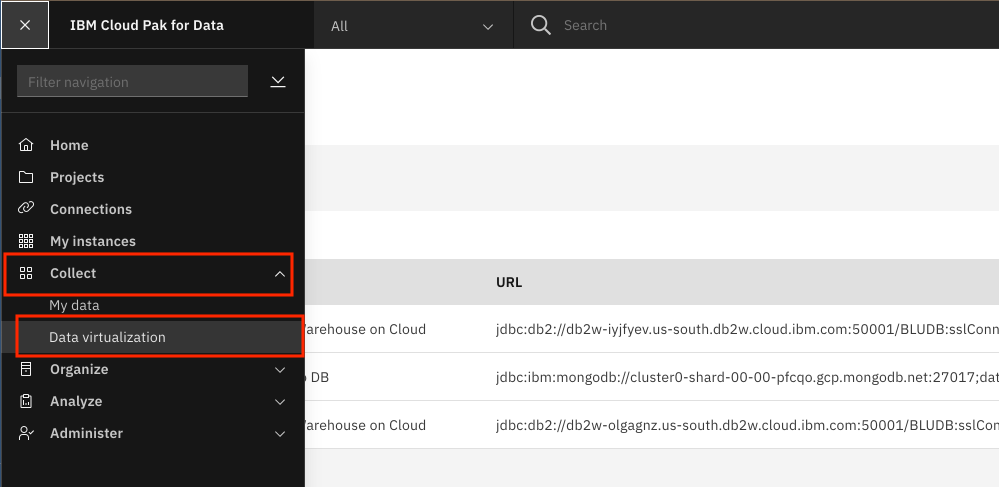
- From the Data virtualization sub-menu, Click on the Menu drop down list and choose Virtualization -> Virtualize.
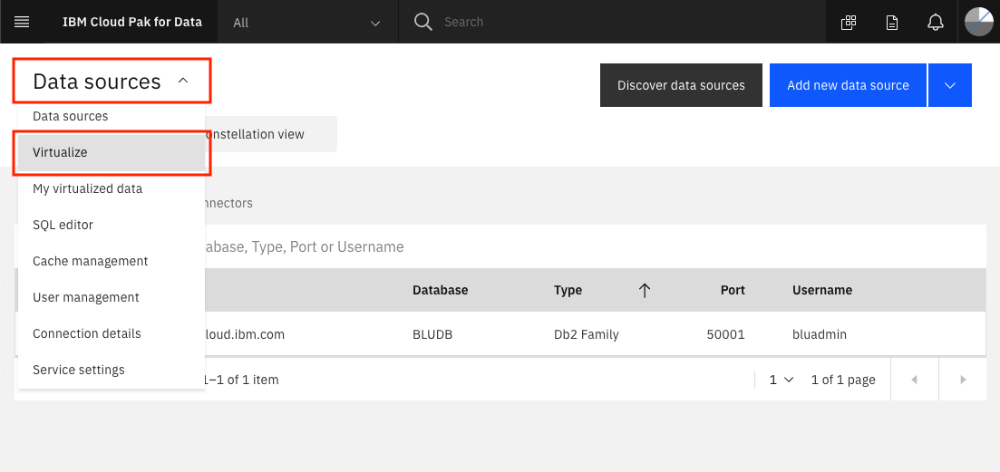
-
Several tables names will be displayed across any of the data sources that are included in the data virtualization server. You will notice that on the right panel, we can filter the tables being displayed by selecting the datasource.
-
To simplify the search for tables you will use, click on the
Schemascolumn header to sort the tables by Schema. Then find the tables we will be using for this workshop:MEDICATIONS,PATIENTSandCONDITIONS, which are under theCP4DHEALTHschema. Select the checkboxes next to these three tables, and then click onAdd to cartfollowed by theView Cartbutton.
Note: You may need to page through the available tables by clicking on the right arrow at the bottom of the tables view.
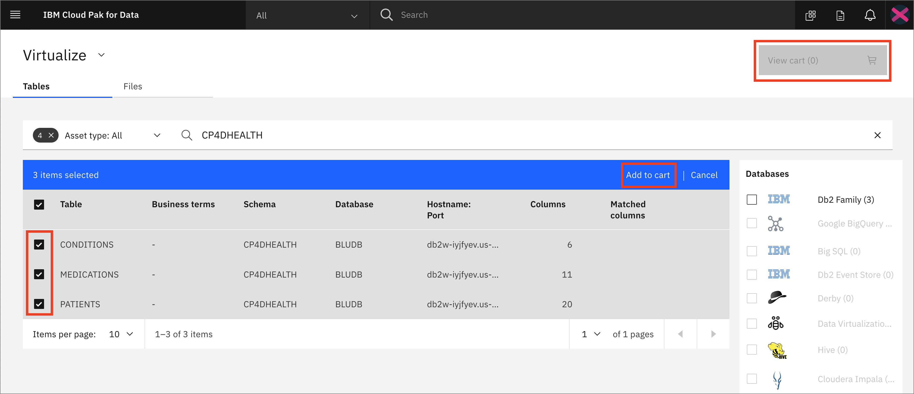
- The next panel prompts you to select where to assign the virtualized tables. Select the
My virtualized dataradio button. Click theVirtualizebutton to add the virtualized tables to your data (we left the default values, so the tables will be virtualized under your own user schema with the same table names as the original tables).
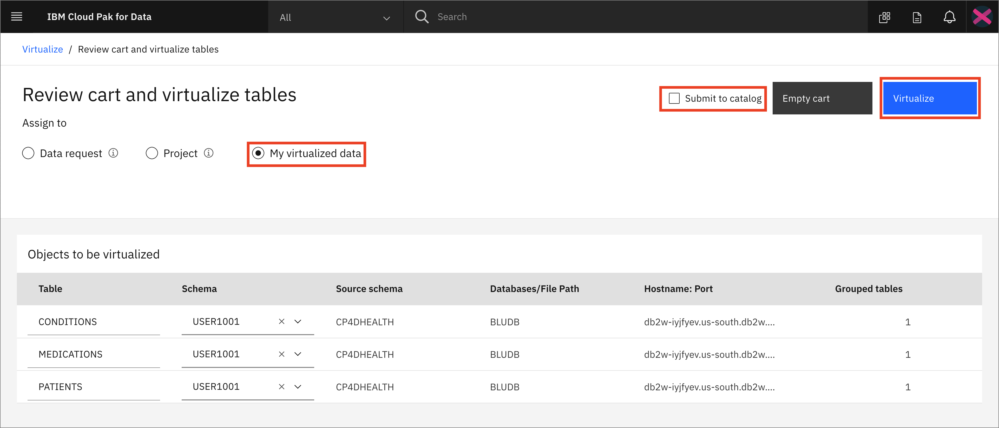
- You'll be notified that the virtual tables have been created. Let's see the new virtualized tables from the Data Virtualization tool by clicking
View my virtualized databutton.
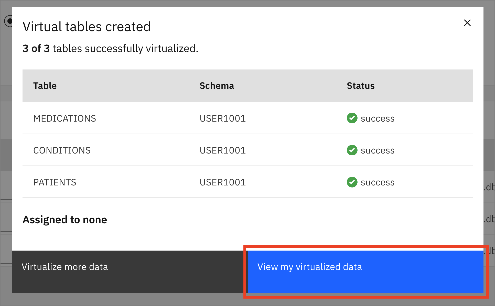
Create Joined Virtual Views¶
Now we're going to join the tables we previously virtualized, so we have a final merged set of data. It will be easier to do it here rather than in a notebook where we'd have to write code to handle three different data sets.
- From the 'My virtualized data' page, Click on two of the virtualized tables (
PATIENTSandMEDICATIONS) and click theJoinbutton.
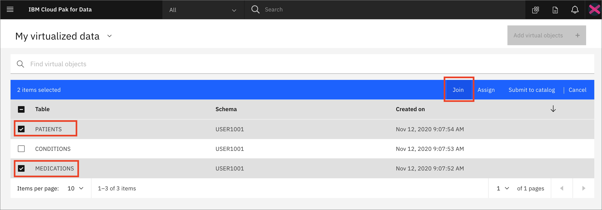
- To join the tables we need to pick a key that is common to both data sets. Here we choose to map
IDfrom the PATIENTS table toPATIENTon the MEDICATIONS table. Do this by clicking on one and dragging it to another. When the line is drawn click on the Next button.
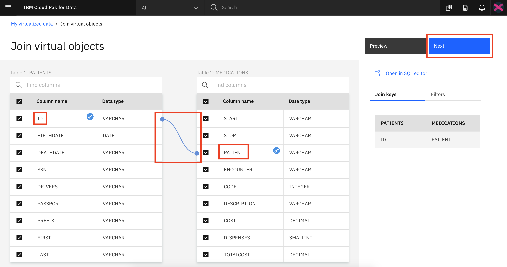
- In the next panel we will accept the existing names for our columns. Click the
Nextbutton to continue.
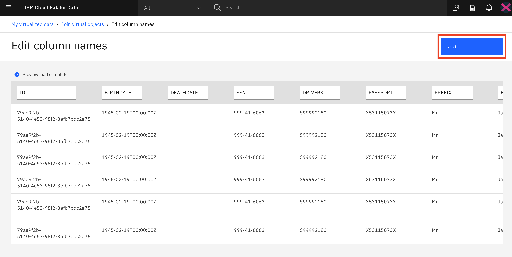
- In the next panel we'll give our joined data view a unique name (to be consistent with SQL standards, pick an all uppercase name), choose something like:
XXXPATIENTMEDICATIONS(whereXXXis my All Upper Case user ID or intitials). Also select theMy virtualized dataradio button. Click theCreate viewbutton to add the virtualized aggregate view to your data.
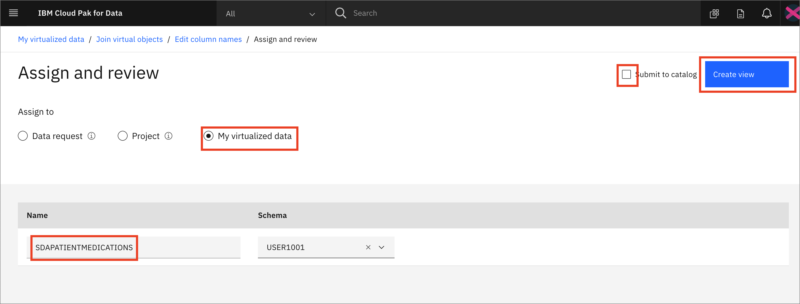
- You'll be notified that the join view creation has succeeded! Click on View my virutalized data button.
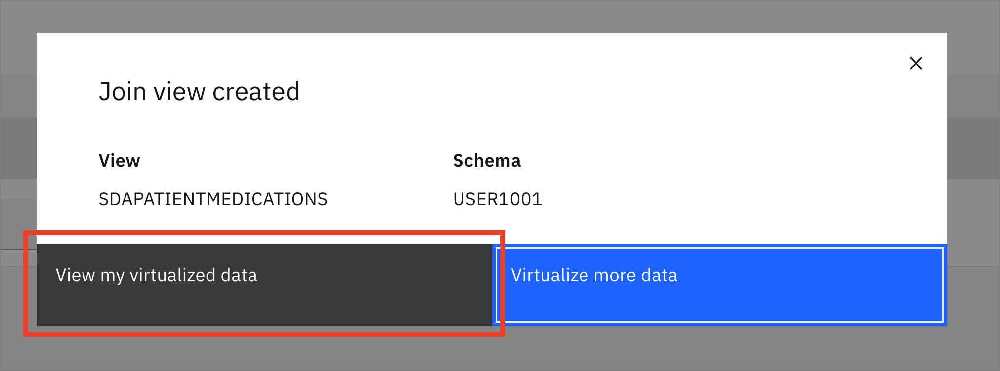
- Repeat the same steps as above, but this time choose to join the new joined view you just created (
XXXPATIENTMEDICATIONS) and the last virtualized table (CONDITIONS), to create a new joined view that has all three tables. Click theJoinbutton.
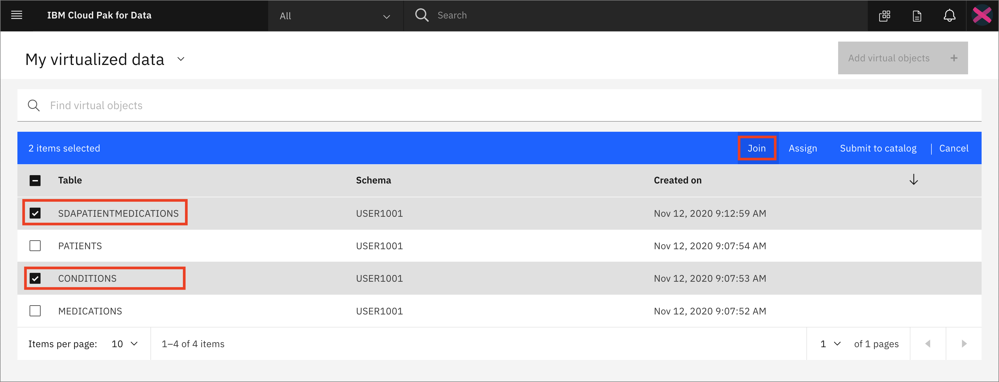
- Again join the two tables by selecting/mapping the
IDfrom the XXXPATIENTMEDICATIONS table toPATIENTon the CONDITIONS. Do this by clicking on one and dragging it to another. When the line is drawn click on the Next button.
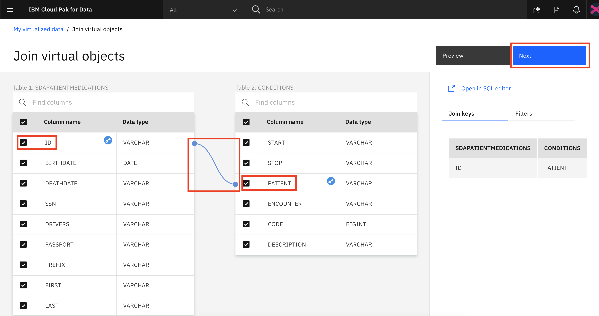
- In the next panel we can scroll to the right and see that there are duplicate columns for START,STOP,PATIENT,ENCOUNTER,CODE,DESCRIPTION. Rename them by appending CONDITION to each in order to avoid a naming conflict. Click the
Nextbutton to continue.
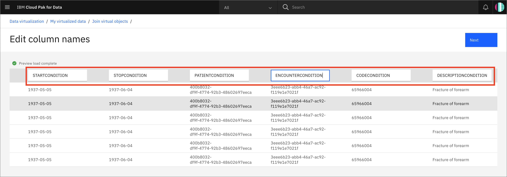
-
In the next panel we'll give our joined data view a unique name (to be consistent with SQL standards, pick an all uppercase name), choose something like:
XXXPATIENTMEDICATIONSCONDITIONS(whereXXXis my All Upper Case user ID or intitials). Also select theMy virtualized dataradio button. If there is aSubmit to catalogcheckbox on the top right, unselect it and finally click theCreate viewbutton to add the virtualized aggregate view to your data. -
You'll be notified that the join view creation has succeeded! Click on
View my virtualized databutton. -
From the
My virtualized datapage you should now see all three virtualized tables and two joined tables.
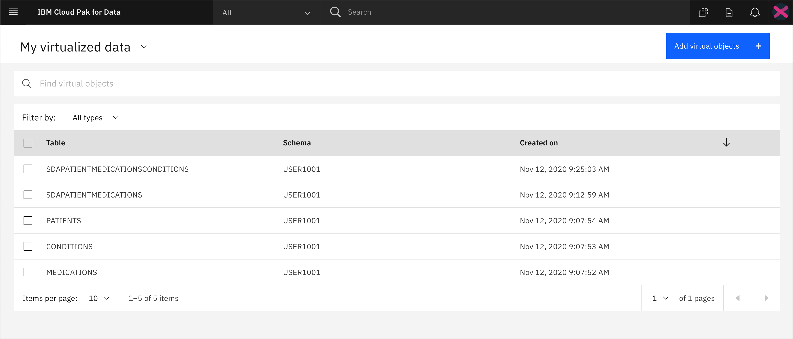
- Next we'll assign our virtual data to our project. Select the
Tablebox, or all boxes individually, and clickAssign.
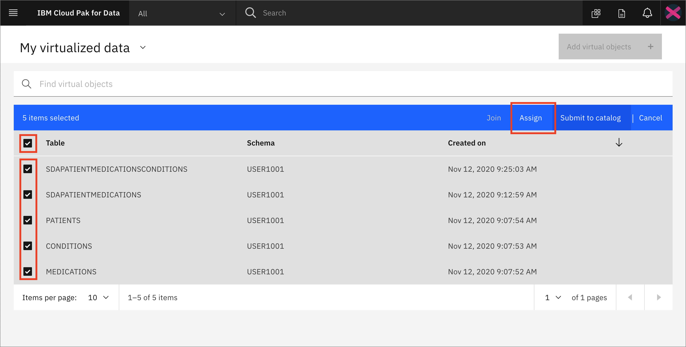
- For Assign to choose
Project, then select the project that you created in the pre-work. Make sure thatSubmit to catalogis unchecked and clickAssign.
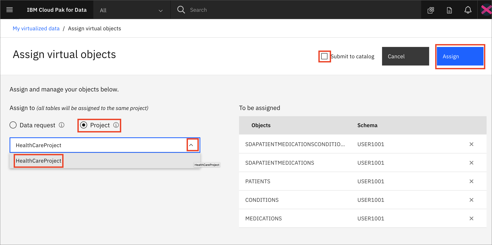
- Go back to your virtualized data if you will complete the next section or finish with the Conclusion
2. Grant access to virtualized data¶
Note: This section only needs to be completed if there are non-Admin or non-Data Engineer users you are working in a group with. The instructors would have indicated that it needs to be completed to give those users access to the data you have virtualized above.
In order for other users to have access to the data that you just virtualized, you need to grant them access. Follow these steps to make your Virtualized data visible to them.
- If you are not already in the data virtualization tool, launch the tool by going to the (☰) navigation menu and click
Data->Data virtualization.
- From the Data virtualization sub-menu, Click on the Menu drop down list and choose Virtualization ->
My virtualized data.
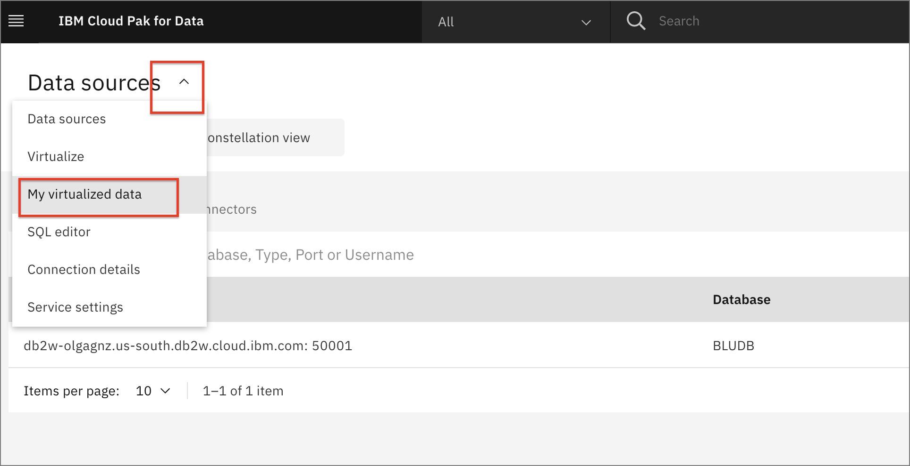
- For one of the virtualized data assets you've created, click the 3 vertical dots on the right (Note: you will have to hover over the area all the way on the right of the table row to see the dots.) and choose
Manage access.
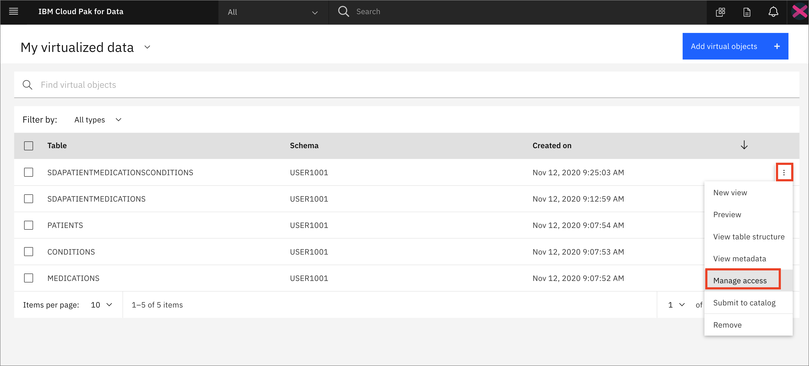
- Click the
Specific usersbutton and click theAdd userbutton.
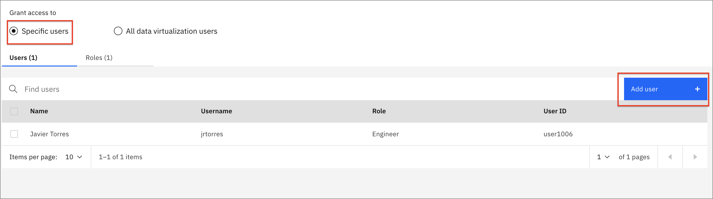
- Select the user (or multiple users) you wish to grant access to and click the
Add usersbutton.
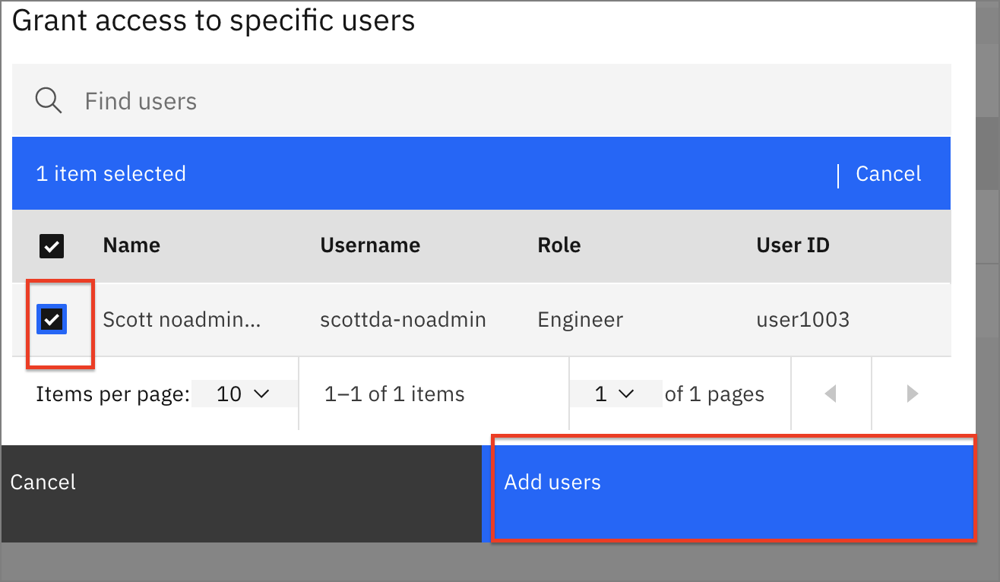
- Repeat the above steps to give access to the remaining virtualized tables and views (all five that you created).
Conclusion¶
In this section we learned how to make connection to databases that contain our data, how to virtualize them, and how to allow other to collaborate with us and use the virtualized data.
Remember that you can add data from different databases and servers if you need to. Moreover, you can virtualized these data from different sources together as well! The goal is to take care of bringing the data to the platform early on so all the data scientists can use it without reinventing the wheel while you keep full control of who has access to what data.